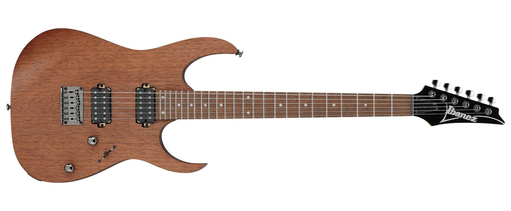

Guitarra clásica
También llamada guitarra española, utiliza cuerdas de nylon y es muy usada en música clásica, flamenco y folklore.

También llamada guitarra española, utiliza cuerdas de nylon y es muy usada en música clásica, flamenco y folklore.
Usa cuerdas de acero y es común en pop, rock, folk y música acústica en general.

Permite amplificación y efectos. Fundamental en géneros como rock, blues, jazz y metal.
